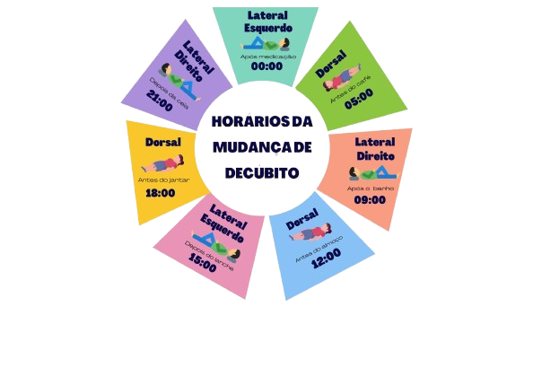

A Importancia da mudança de decúbito
A mudança de decúbito consiste em mudar a posição do paciente acamado com o objetivo de proporcionar maior conforto, estimular a circulação e evitar complicações devido à imobilidade prolongada, como as úlceras por pressão. O objetivo do estudo é identificar as técnicas utilizadas, pelo PE e SAE, no processo de cuidado aos pacientes propícios a adquirir essas úlceras de pressão. O trabalho trata-se de um estudo exploratório de revisão sistemática da literatura. Conclui-se que a mudança de decúbito é essencial para prevenir úlceras de pressão e garantir qualidade de vida ao paciente, por isso os profissionais de saúde precisam estar atentos a essas ações e serem capacitados para prestar atendimento de qualidade aos mesmos.
